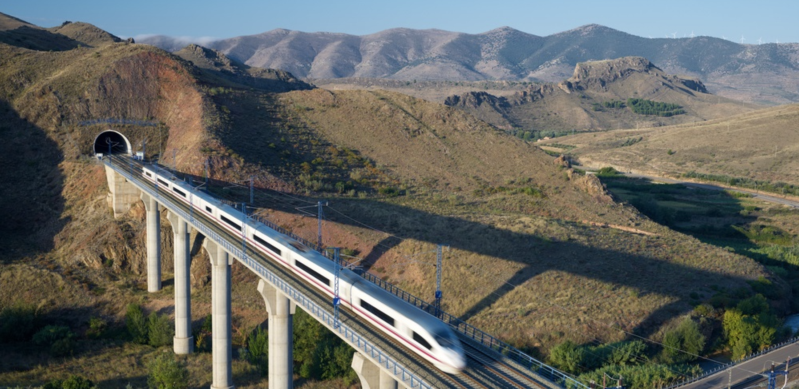

Spanje per Spoor
Mijn reis door Spanje
Hoi! Ik ben Dara en ik ben in 2022 alleen door Spanje gaan reizen voor bijna 6 weken. Dit heb ik voornamelijk met de trein gedaan door middel van een interrailpas. Ik heb het tijdens deze reis zo naar m'n zin gehad, dat het me leuk leek om dit te delen. Ik zal je op deze site meenemen op mijn route en over elke bestemmingen wat vertellen. Ook kun je in mijn fotogalerij kijken naar de leukste foto's van mijn avontuur. Ik hoop hiermee mensen te kunnen inspireren of simpelweg even te vermaken! Mocht je na het kijken en lezen over mijn reis zoiets hebben van dat wil ik ook! Kijk dan nog even bij de pagina met tips. Hier deel ik handige tips&tricks zoals een inpaklijst, maar bijvoorbeeld ook leuke recepten of linkjes naar andere handige sites.
Veel plezier bij het bekijken van mijn site!